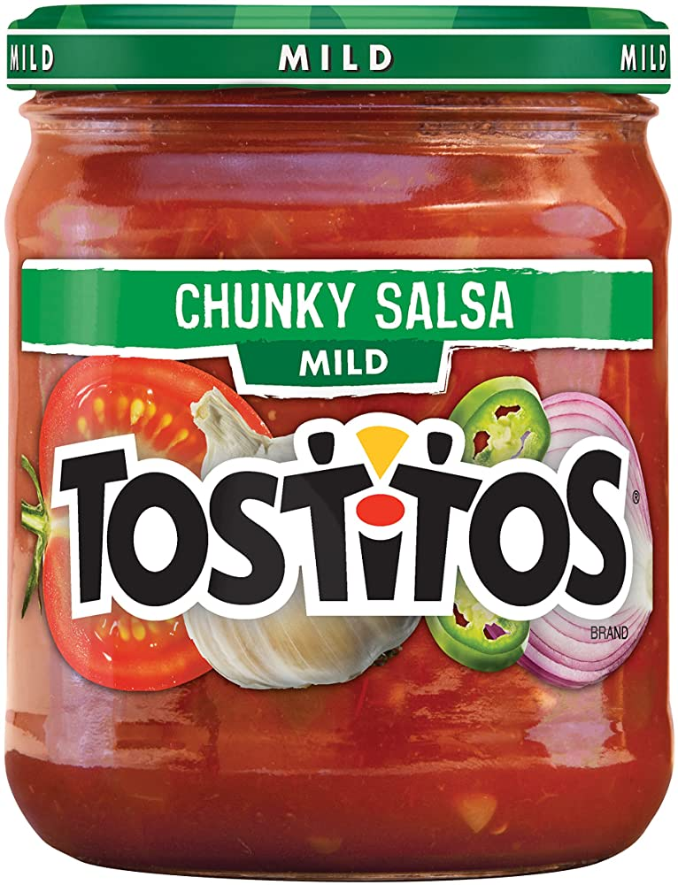

This recipe is quick and delicious. The ingredients are few and cost effective
Ingredients:

two to three large chicken breasts
one large jar of salsa
one pkg of soft or hard tortilla shells
one bag of shredded cheese , of your choice
one small container of sour cream
0ne can of black olives
one small onion
2 small tomatoe
one bag of shredded lettuce
Directions:
boil and shred the chicken breasts
place in a large skillet
pour in the jar of salsa
turn flame down to simmer until bubbling
turn off flame
chop black liives
dice tomatoe and onion
serve the warmed chicken and salsa mixture with your choce of soft or hard tortillas, top with lettuce, tomatoes and onions etc.
Dont forget to add sour cream and shredded cheese. Enjoy!
For more chicken taco recipes check out this link: Recipes
For tasty salsa options check out this link: salsa options